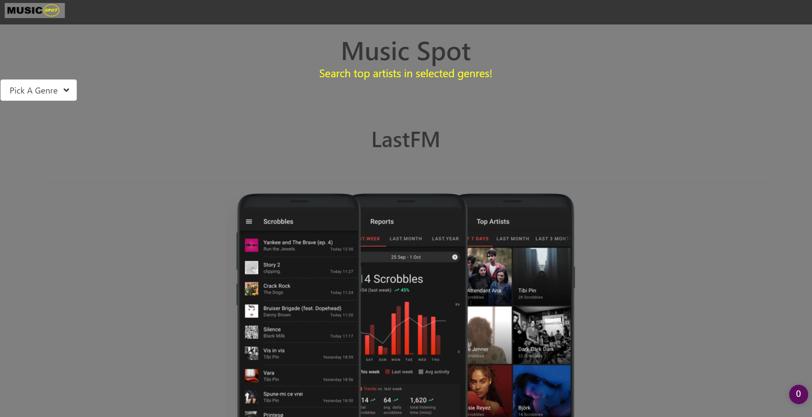
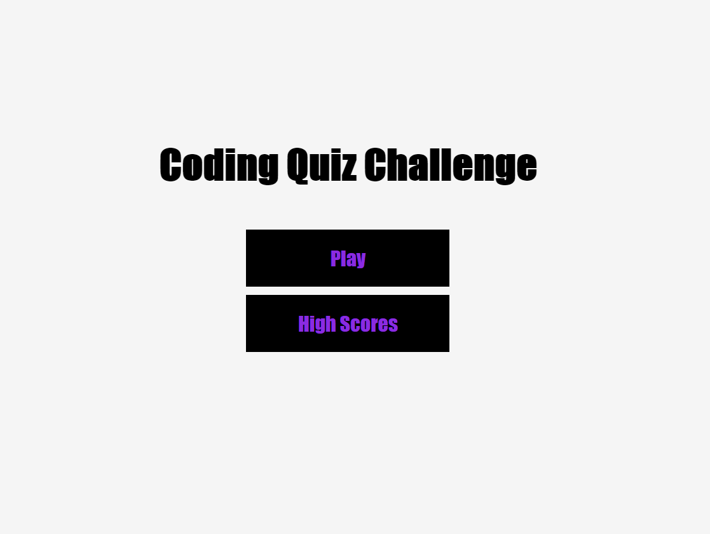

First collaborative project with classmates
1-music-spot is a web application that allows you to find the top 5 most streamed artists of your favorite genre.
First look at code refractoring, the website features a description of brand awareness, search engine optimization, social media marketing and other useful descriptions.

First code made from scratch, this website allows you to take a timed quiz with questions based around JavaScript